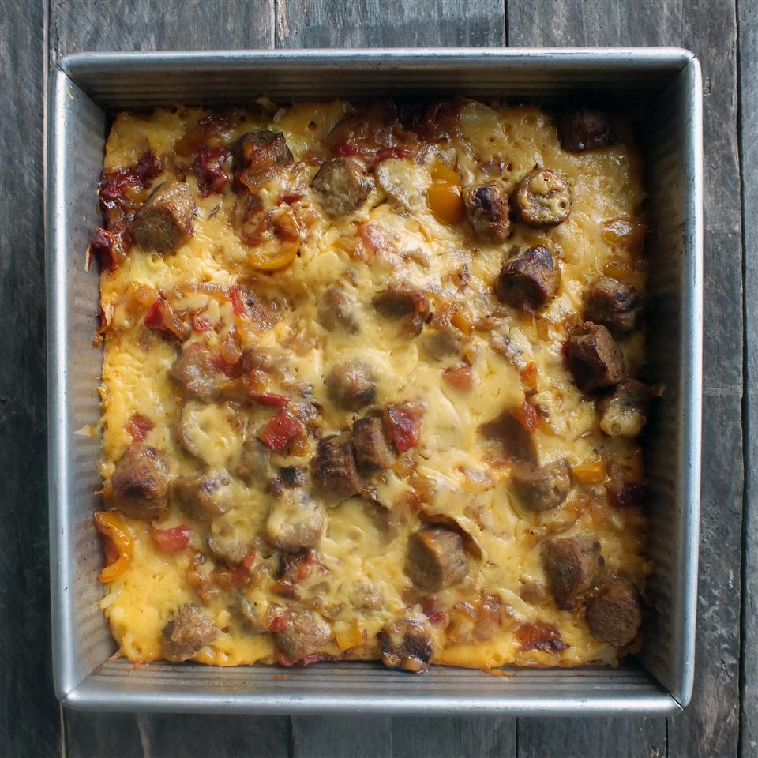

Grilled Cheese

Description
A fantastic sausage casserole from All Recipes made with sausage, cheese, and hashbrowns, perfect for any big breakfast occasions!
Ingredients
- 1 (2 pound) package frozen hash brown potatoes, thawed
- 1 pound pork sausage
- 1 small onion, diced
- 5 eggs
- 1/2 cup milk
- 1/2 teaspoon onion powder
- 1/8 teaspoon garlic powder
- Salt and ground black pepper to taste
- 12 ounces shredded cheddar cheese
Steps
- Preheat the oven to 350 degrees F (175 degrees C). Grease an 8-inch square pan; add hash brown potatoes and arrange in an even layer.
- Place sausage and onion in a large skillet over medium heat. Cook and stir until the sausage is browned and crumbled, about 10 minutes; drain.
- Meanwhile, whisk eggs, milk, onion powder, garlic powder, salt, and pepper together in a large bowl until well combined; pour over the potatoes and sprinkle with 1/2 of the Cheddar cheese. Add sausage mixture on top and sprinkle with remaining Cheddar. Cover with aluminum foil.
- Bake in the preheated oven for 1 hour. Remove foil; return casserole to the oven and bake until a knife inserted into the center comes out clean, about 10 minutes. Let stand for 5 minutes before serving.
Sources